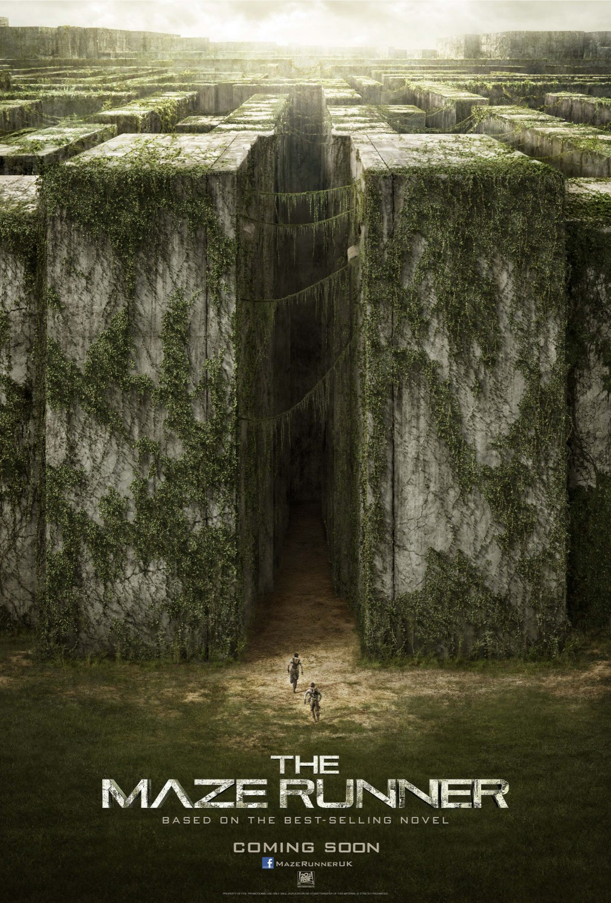
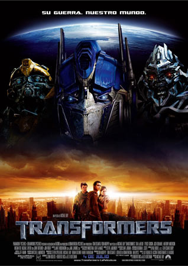
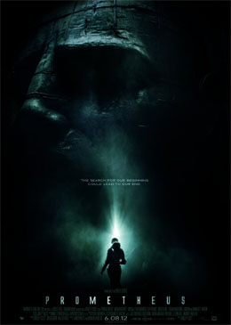
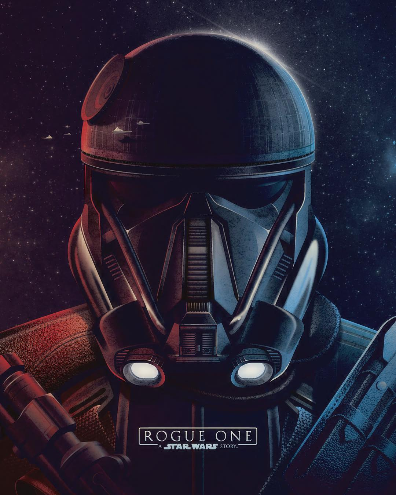
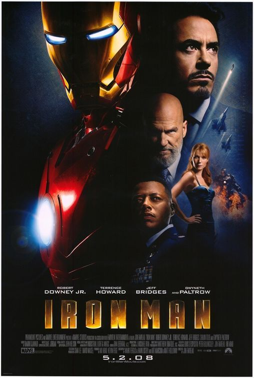

5.1: Divergent
Ratings : 🌟 6.6
Genre :ActionAdventureSci-Fi
Release Date : 21 March 2014
Watch-Time : 2h 19min.
Director : Neil Burger
Starring : Shailene Woodley, Theo James, Ashley Judd, Jai Courtney, Ray Stevenson, Zoë Kravitz, Miles Teller, Tony Goldwyn, Maggie Q, Kate Winslet
Box-Office : $288.9 million
Storyline:
Set in a futuristic dystopia where society is divided into five factions that each represent a different virtue, teenagers have to decide if they want to stay in their faction or switch to another - for the rest of their lives. Tris Prior makes a choice that surprises everyone. Then Tris and her fellow faction-members have to live through a highly competitive initiation process to live out the choice they have made. They must undergo extreme physical and intense psychological tests, that transform them all. But Tris has a secret that she is Divergent, which means she doesn't fit into any one group. If anyone knew, it would mean a certain death. As she discovers a growing conflict that threatens to unravel her seemingly peaceful society, this secret might help her save the people she loves... or it might destroy her.
5.2: The Maze Runner
Ratings : 🌟 6.8
Genre : ActionMysterySci-Fi
Release Date : 19 September 2014
Watch-Time : 1h 53min.
Director : Wes Ball
Starring : Dylan O'Brien, Kaya Scodelario, Thomas Brodie-Sangster, Will Poulter, Patricia Clarkson
Box-Office : $348.3 million
Storyline:
Awakening in an elevator, remembering nothing of his past, Thomas emerges into a world of about thirty teenage boys, all without past memories, who have learned to survive under their own set of rules in a completely enclosed environment, subsisting on their own agriculture and supplies. With a new boy arriving every thirty days, the group has been in "The Glade" for three years, trying to find a way to escape through the Maze that surrounds their living space (patrolled by cyborg monsters named 'Grievers'). They have begun to give up hope when a comatose girl arrives with a strange note, and their world begins to change with the boys dividing into two factions: those willing to risk their lives to escape and those wanting to hang onto what they've got and survive
4.1: Transformers
Ratings : 🌟 7.0
Genre : ActionAdventureSci-Fi
Release Date : 3 July 2007
Watch-Time : 2h 24min.
Director : Michael Bay
Starring : Shia LaBeouf, Tyrese Gibson, Josh Duhamel, Anthony Anderson, Megan Fox, Rachael Taylor, John Turturro, Jon Voight
Box-Office : $709.7 million
Storyline:
High-school student Sam Witwicky buys his first car, who is actually the Autobot Bumblebee. Bumblebee defends Sam and his girlfriend Mikaela Banes from the Decepticon Barricade, before the other Autobots arrive on Earth. They are searching for the Allspark, and the war on Earth heats up as the Decepticons attack a United States military base in Qatar. Sam and Mikaela are taken by the top-secret agency Sector 7 to help stop the Decepticons, but when they learn the agency also intends to destroy the Autobots, they formulate their own plan to save the world.
4.2: The Hunger Games
Ratings : 🌟 7.2
Genre : ActionAdventureSci-Fi
Release Date : 23 March 2012
Watch-Time : 2h 22min.
Director : Gary Ross
Starring : Jennifer Lawrence, Josh Hutcherson, Liam Hemsworth, Woody Harrelson, Elizabeth Banks, Lenny Kravitz, Stanley Tucci, Donald Sutherland
Box-Office : $694.4 million
Storyline:
In a dystopian future, the totalitarian nation of Panem is divided into 12 districts and the Capitol. Each year two young representatives from each district are selected by lottery to participate in The Hunger Games. Part entertainment, part brutal retribution for a past rebellion, the televised games are broadcast throughout Panem. The 24 participants are forced to eliminate their competitors while the citizens of Panem are required to watch. When 16-year-old Katniss' young sister, Prim, is selected as District 12's female representative, Katniss volunteers to take her place. She and her male counterpart, Peeta, are pitted against bigger, stronger representatives, some of whom have trained for this their whole lives.
3.1: Lucy
Ratings : 🌟 6.4
Genre : ActionThrillerSci-Fi
Release Date : 25 July 2014
Watch-Time : 1h 29min.
Director : Luc Besson
Starring : Scarlett Johansson, Morgan Freeman, Choi Min-sik
Box-Office : $463.4 million
Storyline:
It was supposed to be a simple job. All Lucy had to do was deliver a mysterious briefcase to Mr. Jang. But immediately Lucy is caught up in a nightmarish deal where she is captured and turned into a drug mule for a new and powerful synthetic drug. When the bag she is carrying inside of her stomach leaks, Lucy's body undergoes unimaginable changes that begins to unlock her mind's full potential. With her new-found powers, Lucy turns into a merciless warrior intent on getting back at her captors. She receives invaluable help from Professor Norman, the leading authority on the human mind, and French police captain Pierre Del Rio.
3.2: Doctor Strange

Ratings : 🌟 7.5
Genre : ActionAdventureFantasySci-Fi
Release Date : 4 November 2016
Watch-Time : 1h 55min.
Director : Scott Derrickson
Starring : Benedict Cumberbatch, Chiwetel Ejiofor, Rachel McAdams, Benedict Wong, Michael Stuhlbarg, Benjamin Bratt, Scott Adkins, Mads Mikkelsen, Tilda Swinton
Box-Office : $677.7 million
Storyline:
Marvel's "Doctor Strange" follows the story of the talented neurosurgeon Doctor Stephen Strange who, after a tragic car accident, must put ego aside and learn the secrets of a hidden world of mysticism and alternate dimensions. Based in New York City's Greenwich Village, Doctor Strange must act as an intermediary between the real world and what lies beyond, utilising a vast array of metaphysical abilities and artifacts to protect the Marvel Cinematic Universe.
2.1: Prometheus
Ratings : 🌟 7.0
Genre : AdventureMysterySci-Fi
Release Date : 8 June 2012
Watch-Time : 2h 4min.
Director : Ridley Scott
Starring : Noomi Rapace, Michael Fassbender, Guy Pearce, Idris Elba, Logan Marshall-Green, Charlize Theron
Box-Office : $403.4 million
Storyline:
Following a faint trail of clues, the accomplished archaeologist, Doctor Elizabeth Shaw, and her partner, Charlie Holloway, along with a seventeen-man crew, embark on an ambitious, deep-space scientific expedition. Aboard the revolutionary space-exploration starship, USCSS Prometheus, the team sets foot on the rocky terrain of the desolate exomoon, LV-223, in 2093, to investigate the existence of the superior extraterrestrial species known as the "Engineers". But, there, inside a mysterious, complex structure of cavernous dark chambers and an intricate underground system of tunnels, more enigmas await. Now, a terrifying discovery threatens not only the outcome of the bold outer-space mission but also the very future of humankind. Is the world prepared for the answers to the fundamental questions of human existence?
2.2: Avatar
Ratings : 🌟 7.8
Genre : ActionAdventureFantasySci-Fi
Release Date : 18 December 2009
Watch-Time : 2h 42min.
Director : James Cameron
Starring : Sam Worthington, Zoe Saldana, Stephen Lang, Michelle Rodriguez, Sigourney Weaver
Box-Office : $2.79 billion
Storyline:
When his brother is killed in a robbery, paraplegic Marine Jake Sully decides to take his place in a mission on the distant world of Pandora. There he learns of greedy corporate figurehead Parker Selfridge's intentions of driving off the native humanoid "Na'vi" in order to mine for the precious material scattered throughout their rich woodland. In exchange for the spinal surgery that will fix his legs, Jake gathers knowledge, of the Indigenous Race and their Culture, for the cooperating military unit spearheaded by gung-ho Colonel Quaritch, while simultaneously attempting to infiltrate the Na'vi people with the use of an "avatar" identity. While Jake begins to bond with the native tribe and quickly falls in love with the beautiful alien Neytiri, the restless Colonel moves forward with his ruthless extermination tactics, forcing the soldier to take a stand - and fight back in an epic battle for the fate of Pandora.
1.1: Rogue One: A Star Wars Story
Ratings : 🌟 7.8
Genre : ActionAdventureSci-Fi
Release Date : 16 December 2016
Watch-Time : 2h 13min.
Director : Gareth Edwards
Starring : Felicity Jones, Diego Luna, Ben Mendelsohn, Donnie Yen, Mads Mikkelsen, Alan Tudyk, Jiang Wen, Forest Whitaker
Box-Office : $1.056 billion
Storyline:
All looks lost for the Rebellion against the Empire as they learn of the existence of a new super weapon, the Death Star. Once a possible weakness in its construction is uncovered, the Rebel Alliance must set out on a desperate mission to steal the plans for the Death Star. The future of the entire galaxy now rests upon its success.
1.2: Iron Man
Ratings : 🌟 7.9
Genre : ActionAdventureSci-Fi
Release Date : 2 May 2008
Watch-Time : 2h 6min.
Director : Jon Favreau
Starring : Robert Downey Jr., Terrence Howard, Jeff Bridges, Shaun Toub, Gwyneth Paltrow
Box-Office : $585.3 million
Storyline:
Tony Stark. Genius, billionaire, playboy, philanthropist. Son of legendary inventor and weapons contractor Howard Stark. When Tony Stark is assigned to give a weapons presentation to an Iraqi unit led by Lt. Col. James Rhodes, he's given a ride on enemy lines. That ride ends badly when Stark's Humvee that he's riding in is attacked by enemy combatants. He survives - barely - with a chest full of shrapnel and a car battery attached to his heart. In order to survive he comes up with a way to miniaturize the battery and figures out that the battery can power something else. Thus Iron Man is born. He uses the primitive device to escape from the cave in Iraq. Once back home, he then begins work on perfecting the Iron Man suit. But the man who was put in charge of Stark Industries has plans of his own to take over Tony's technology for other matters.